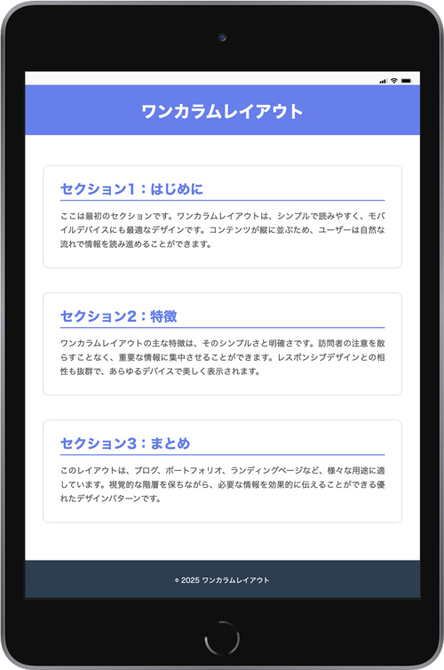
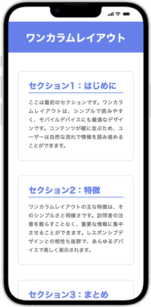

はじめてのワンカラムレイアウト


テキスト
ワンカラムレイアウト セクション1：はじめに ここは最初のセクションです。ワンカラムレイアウトは、シンプルで読みやすく、モバイルデバイスにも最適なデザインです。コンテンツが縦に並ぶため、ユーザーは自然な流れで情報を読み進めることができます。 セクション2：特徴 ワンカラムレイアウトの主な特徴は、そのシンプルさと明確さです。訪問者の注意を散らすことなく、重要な情報に集中させることができます。レスポンシブデザインとの相性も抜群で、あらゆるデバイスで美しく表示されます。 セクション3：まとめ このレイアウトは、ブログ、ポートフォリオ、ランディングページなど、様々な用途に適しています。視覚的な階層を保ちながら、必要な情報を効果的に伝えることができる優れたデザインパターンです。 © 2025 ワンカラムレイアウト
記述ポイント
- この段階では、id名・class名を指定しないで進めます
- 指定する項目は、
- 文書構造（header、main、footer）
- 文字要素の空間（margin、padding）
- 背景色
- 文字色
- 文字サイズ
- 行揃え
- line-height
- 枠線
- 影
記述例
index.html
<!DOCTYPE html> <html lang="ja"> <head> <meta charset="UTF-8"> <meta name="viewport" content="width=device-width, initial-scale=1.0"> <title>ワンカラムレイアウト</title> <link rel="stylesheet" href="css/style.css"> </head> <body> <!-- header --> <header> <h1>ワンカラムレイアウト</h1> </header> <!-- /header --> <!-- main --> <main> <section> <h2>セクション1：はじめに</h2> <p>ここは最初のセクションです。ワンカラムレイアウトは、シンプルで読みやすく、モバイルデバイスにも最適なデザインです。コンテンツが縦に並ぶため、ユーザーは自然な流れで情報を読み進めることができます。</p> </section> <section> <h2>セクション2：特徴</h2> <p>ワンカラムレイアウトの主な特徴は、そのシンプルさと明確さです。訪問者の注意を散らすことなく、重要な情報に集中させることができます。レスポンシブデザインとの相性も抜群で、あらゆるデバイスで美しく表示されます。</p> </section> <section> <h2>セクション3：まとめ</h2> <p>このレイアウトは、ブログ、ポートフォリオ、ランディングページなど、様々な用途に適しています。視覚的な階層を保ちながら、必要な情報を効果的に伝えることができる優れたデザインパターンです。</p> </section> </main> <!-- /main --> <!-- footer --> <footer> <p><small>© 2025 ワンカラムレイアウト</small></p> </footer> <!-- /footer --> </body> </html>
style.css
@charset "UTF-8"; /* --------------------------------- reset --------------------------------- */ * { margin: 0; padding: 0; box-sizing: border-box; } /* --------------------------------- body --------------------------------- */ body { background-color: #fff; color: #333; font-family: sans-serif; line-height: 1.0; } /* --------------------------------- header --------------------------------- */ header { padding: 36px 0 30px; background-color: #667eea; color: #fff; } header h1 { font-size: 32px; text-align: center; } /* --------------------------------- main --------------------------------- */ main { max-width: 760px; margin: 0 auto; padding: 60px 32px 24px; } section { margin-bottom: 50px; padding: 32px; background-color: #fff; border-radius: 10px; box-shadow: 0 0 3px #a8a8a8; /* X:0, Y:0, ぼかし:3px */ } section h2 { margin-bottom: 16px; padding-bottom: 8px; /* 文字と下線との隙間を設定 */ border-bottom: 2px solid #667eea; color: #667eea; font-size: 26px; } section p { color: #555; line-height: 1.7; text-align: justify; } /* --------------------------------- footer --------------------------------- */ footer { padding: 30px 0; background-color: #2c3e50; color: #fff; text-align: center; }